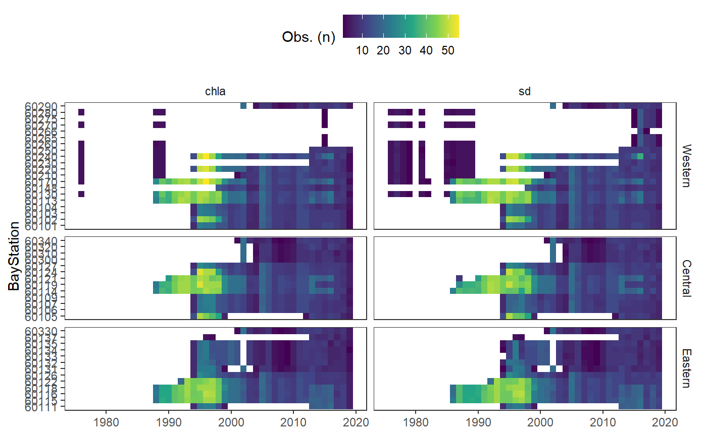
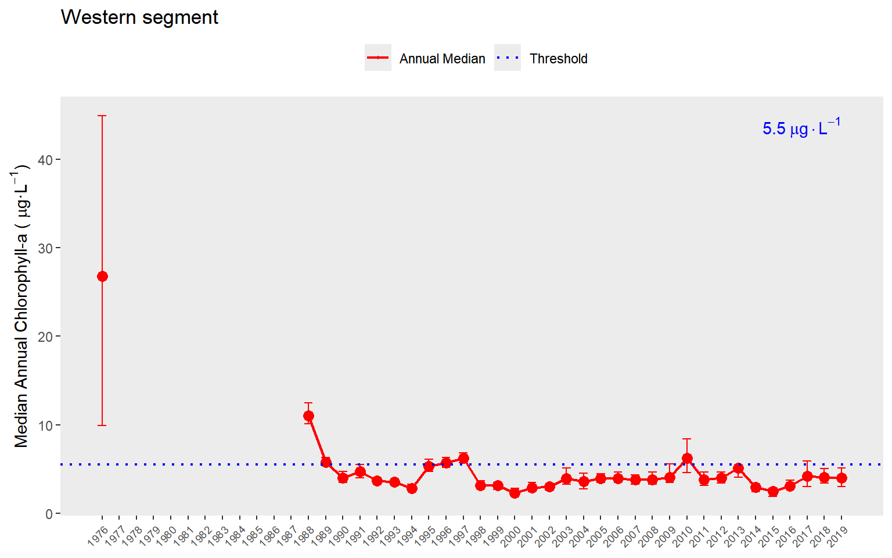
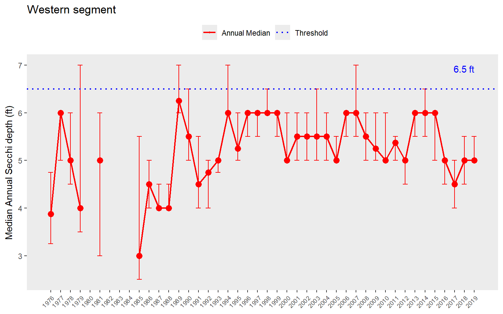
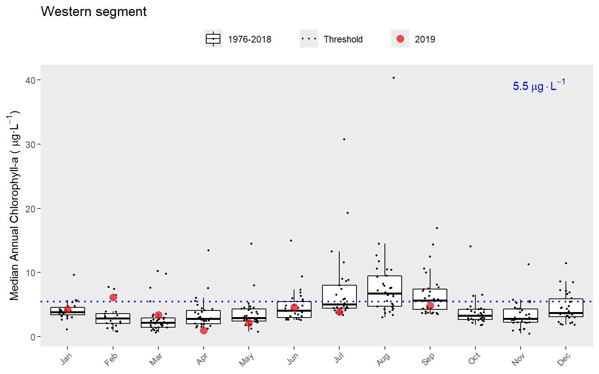
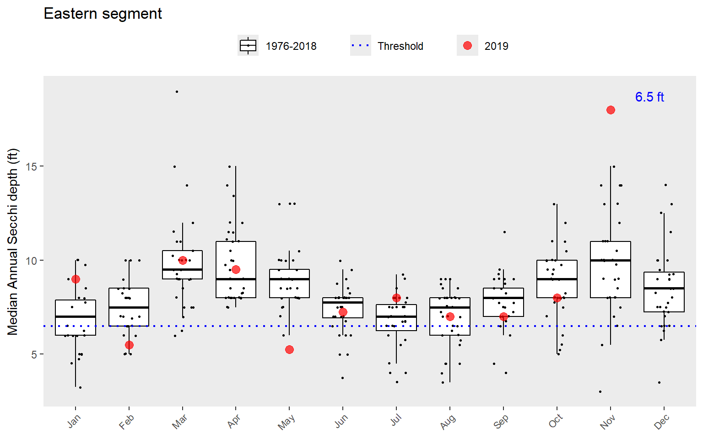

Introduction
Introduction.RmdThe following shows all functions provided in pepreporting, organized by prefix.
Read
-
read_pepwq(): Load local water quality file
Analyze
anlz_attainpep(): Get attainment categoriesanlz_medpep(): Estimate annual medians
Show
show_boxpep(): Plot monthly chlorophyll or secchi depth values for a bay segmentshow_matrixpep(): Create a colorized table for indicator reportingshow_reactablepep(): Create a reactable table for reporting matrices, used internally onlyshow_thrpep(): Plot annual water quality values and thresholds for a bay segment
Basic use
The package includes a pepstations data object that includes metadata for each station, including lat/lon and bay segment.
prj <- 4326
locs <- pepstations %>%
st_as_sf(coords = c('Longitude', 'Latitude'), crs = prj)
mapview(locs, zcol = 'bay_segment', layer.name = 'Bay segment') The water quality data can be imported using the read_pepwq() function. A compressed folder that inludesthe data can be downloaded from here. After the data are downloaded and extracted, the Excel file with the raw data is named “Peconics SCDHS WQ data - up to 2019 so far.xlsx”, or something similar depending on when the data were downloaded. The location of this file on your computer is passed to the import function. Below, a local file renamed as “currentdata.xlsx” that contains the water quality data is downloaded.
dat <- read_pepwq('../inst/extdata/currentdata.xlsx')
head(dat)
#> # A tibble: 6 x 7
#> BayStation bay_segment Date yr mo chla sd
#> <chr> <fct> <date> <dbl> <dbl> <dbl> <dbl>
#> 1 60130 Western 1976-07-20 1976 7 4.55 4.5
#> 2 60170 Western 1976-07-20 1976 7 5.75 6
#> 3 60210 Western 1976-07-20 1976 7 8.5 4
#> 4 60220 Western 1976-07-20 1976 7 32.2 3.25
#> 5 60230 Western 1976-07-20 1976 7 29.4 4
#> 6 60240 Western 1976-07-20 1976 7 24.3 4.12The raw data includes multiple fields, but only the chlorophyll and secchi data are retained for reporting. Each station is grouped by major bay segment, defined as Western, Central, Eastern.
A quick view of the number of observations and length of record at each station shows that effort was not continuous.
toplo <- dat %>%
select(bay_segment, BayStation, yr, chla, sd) %>%
pivot_longer(c('chla', 'sd')) %>%
group_by(bay_segment, BayStation, yr, name) %>%
summarise(`Obs. (n)` = n())
p <- ggplot(toplo, aes(x = yr, y = BayStation, fill = `Obs. (n)`)) +
geom_tile()+ #colour = 'lightgrey') +
facet_grid(bay_segment ~ name, scales = 'free_y', space = 'free_y') +
theme_bw() +
theme(
panel.grid.major = element_blank(),
panel.grid.minor= element_blank(),
strip.background = element_blank(),
axis.title.x = element_blank(),
legend.position = 'top',
axis.text.y = element_text(size = 7)
) +
scale_fill_viridis_c()
p
The function anlz_pepdat() summarizes the station data by bay segment. The funciton returns annual means for chlorophyll and secchi depth and monthly means by year for chlorophyll and secchi depth. These summaries are then used to determine if bay segment targets for water quality are met using the anlz_attain() and anlz_attainpep() function.
Below shows how to use anlz_pepdat() to summarize the data by bay segment to estimate annual and monthly means for chlorophyll and secchi depth. The output is a two-element list for the annual (ann) and monthly (mos) means by segment.
medpep <- anlz_medpep(dat)
medpep
#> $ann
#> # A tibble: 792 x 5
#> bay_segment yr val est var
#> <fct> <dbl> <dbl> <chr> <chr>
#> 1 Western 1976 9.90 lwr.ci chla
#> 2 Western 1976 26.8 medv chla
#> 3 Western 1976 44.9 upr.ci chla
#> 4 Western 1977 NA lwr.ci chla
#> 5 Western 1977 NA medv chla
#> 6 Western 1977 NA upr.ci chla
#> 7 Western 1978 NA lwr.ci chla
#> 8 Western 1978 NA medv chla
#> 9 Western 1978 NA upr.ci chla
#> 10 Western 1979 NA lwr.ci chla
#> # ... with 782 more rows
#>
#> $mos
#> # A tibble: 3,168 x 6
#> bay_segment yr mo val est var
#> <fct> <dbl> <dbl> <dbl> <chr> <chr>
#> 1 Western 1976 1 NA medv chla
#> 2 Western 1976 2 NA medv chla
#> 3 Western 1976 3 NA medv chla
#> 4 Western 1976 4 NA medv chla
#> 5 Western 1976 5 NA medv chla
#> 6 Western 1976 6 NA medv chla
#> 7 Western 1976 7 30.8 medv chla
#> 8 Western 1976 8 40.4 medv chla
#> 9 Western 1976 9 16.9 medv chla
#> 10 Western 1976 10 NA medv chla
#> # ... with 3,158 more rowsThis output can then be further analyzed with anlz_attainpep() to determine if the bay segment outcomes are met in each year. The results are used by the plotting functions described below. In short, the chl_sd column indicates the categorical outcome for chlorophyll and light attenuation for each segment. The outcomes are integer values from zero to three. The relative exceedances of water quality thresholds for each segment, both in duration and magnitude, are indicated by higher integer values.
anlz_attainpep(medpep)
#> # A tibble: 132 x 4
#> bay_segment yr chla_sd outcome
#> <fct> <dbl> <chr> <chr>
#> 1 Western 1976 3_3 red
#> 2 Western 1977 NA_3 <NA>
#> 3 Western 1978 NA_3 <NA>
#> 4 Western 1979 NA_2 <NA>
#> 5 Western 1980 NA_NA <NA>
#> 6 Western 1981 NA_3 <NA>
#> 7 Western 1982 NA_NA <NA>
#> 8 Western 1983 NA_NA <NA>
#> 9 Western 1984 NA_NA <NA>
#> 10 Western 1985 NA_3 <NA>
#> # ... with 122 more rowsPlotting
The plotting functions are used to view long-term trends for each bay segment and annual results for the overall water quality assessment.
The show_thrpep() function provides a more descriptive assessment of annual trends for a chosen bay segment relative to thresholds. In this plot we show the annual medians and non-parametric confidence internals (95%) across stations for a segment. The red line shows annual trends and the horizontal blue line indicates the threshold for chlorophyll-a.

We can show the same plot but for secchi depth by changing the param = "chla" to param = "sd". Note the change in the horizontal reference lines for the secchi depth target. Secchi trends must also be interpreted inversely to chlorophyll, such that lower values generally indicate less desirable water quality.

The year range to plot can also be specified using the yrrng argument, where the default is yrrng = c(1976, 2019).

The show_thrpep() function uses results from the anlz_medpep() function. For example, you can retrieve the values from the above plot as follows:
rawdat %>%
anlz_medpep %>%
.[['ann']] %>%
filter(bay_segment == 'Western') %>%
filter(var == 'chla') %>%
filter(yr >= 1988 & yr <= 2019)
#> # A tibble: 96 x 5
#> bay_segment yr val est var
#> <fct> <dbl> <dbl> <chr> <chr>
#> 1 Western 1988 10.1 lwr.ci chla
#> 2 Western 1988 11 medv chla
#> 3 Western 1988 12.4 upr.ci chla
#> 4 Western 1989 5.4 lwr.ci chla
#> 5 Western 1989 5.8 medv chla
#> 6 Western 1989 6.3 upr.ci chla
#> 7 Western 1990 3.5 lwr.ci chla
#> 8 Western 1990 4 medv chla
#> 9 Western 1990 4.7 upr.ci chla
#> 10 Western 1991 4 lwr.ci chla
#> # ... with 86 more rowsSimilarly, the show_boxpep() function provides an assessment of seasonal changes in chlorophyll or secchi depth values by bay segment. The most recent year is highlighted in red by default. This allows a simple evaluation of how the most recent year compared to historical averages. The threshold value is shown in blue text and as the dotted line. This is the same dotted line shown in show_thrpep().


A different subset of years and selected year of interest can also be viewed by changing the yrrng and yrsel arguments. Here we show 1980 compared to monthly averages for the last ten years.

The show_thrpep() function is useful to understand annual variation in chlorophyll and secchi depth relative to thresholds for each bay segment. The information from these plots can provide an understanding of how the annual reporting outcomes are determined. An outcome integer from zero to three is assigned to each bay segment for each annual estimate of chlorophyll and secchi depth. These outcomes are based on both the exceedance of the annual estimate above the threshold (blue lines in show_thrpep()) and duration of the exceedance for the years prior. The following graphic describes this logic [1].

Outcomes for annual estimates of water quality are assigned an integer value from zero to three depending on both magnitude and duration of the exceedence.
For the Peconic Estuary, light attenuation is replaced with Secchi depth. The outcomes above are assigned for both chlorophyll and secchi depth. The duration criteria are determined based on whether the exceedance was observed for years prior to the current year. The exceedance criteria for chlorophyll and light-attenuation are currenlty the same for each segment. The pepreporting package contains a peptargets data file that is a reference for determining annual outcomes. This file is loaded automatically with the package and can be viewed from the command line.
peptargets
#> # A tibble: 3 x 4
#> bay_segment name sd_thresh chla_thresh
#> <fct> <chr> <dbl> <dbl>
#> 1 Western Western 6.5 5.5
#> 2 Central Central 6.5 5.5
#> 3 Eastern Eastern 6.5 5.5The final plotting function is show_matrixpep(), which creates an annual reporting matrix that reflects the combined outcomes for chlorophyll and secchi depth. Tracking the attainment outcomes provides the framework from which bay management actions can be developed and initiated. For each year and segment, a color-coded management action is assigned:
Stay the Course: Continue planned projects. Report data via annual progress reports and Baywide Environmental Monitoring Report.
Caution: Review monitoring data and nitrogen loading estimates. Begin/continue TAC and Management Board development of specific management recommendations.
On Alert: Finalize development and implement appropriate management actions to get back on track.
The management category or action is based on the combination of outcomes for chlorophyll and secchi depth [1].

Management action categories assigned to each bay segment and year based on chlorophyll and secchi depth outcomes.
The results can be viewed with show_matrixpep().

The matrix is also a ggplot object and its layout can be changed using ggplot elements. Note the use of txtsz = NULL to remove the color labels.
show_matrixpep(rawdat, txtsz = NULL) +
scale_y_continuous(expand = c(0,0), breaks = c(1976:2019)) +
coord_flip() +
theme(axis.text.x = element_text(angle = 45, hjust = 1, size = 7))
If preferred, the matrix can also be returned in an HTML table that can be sorted and scrolled.
Use a sufficiently large number to view the entire matrix.
Testing different thresholds
By default, all plotting functions use the peptargets data frame included with the package, which assigns a threshold of 6.5 ft for secchi depth and 5.5 ug/L for chlorophyll to all segments. All plotting arguments have an optional argument called trgs that accepts user-provided thresholds. A new data frame can be passed to this argument to evaluate different thresholds. The following demonstrates how to create a custom thresholds data frame (a tibble specifically) and use it to evaluate changes on reporting outcomes. For examples, perhaps less stringent thresholds are required for the Western segment (lower secchi, higher chlorophyll) and more stringent thresholds are required for the Eastern segment (higher secchi, lower chlorophyll).
segs <- c('Western', 'Central', 'Eastern')
newtrgs <- tibble(
bay_segment = factor(segs, levels = segs),
name = factor(segs, levels = segs),
sd_thresh = c(5.5, 6.5, 7.5),
chla_thresh = c(6, 5.5, 5)
)This new data frame can be passed to the plotting functions.

Comparing the default values with the new results can easily be done by plotting the two side by side.

References
[1] A. Janicki, D. Wade, J.R. Pribble, Development of a process to track the status of chlorophyll and light attenuation to support seagrass restoration goals in Tampa Bay, Tampa Bay National Estuary Program, St. Petersburg, Florida, 1999. https://tbeptech.org/TBEP_TECH_PUBS/2000/TBEP_04_00Chlor-A.pdf.